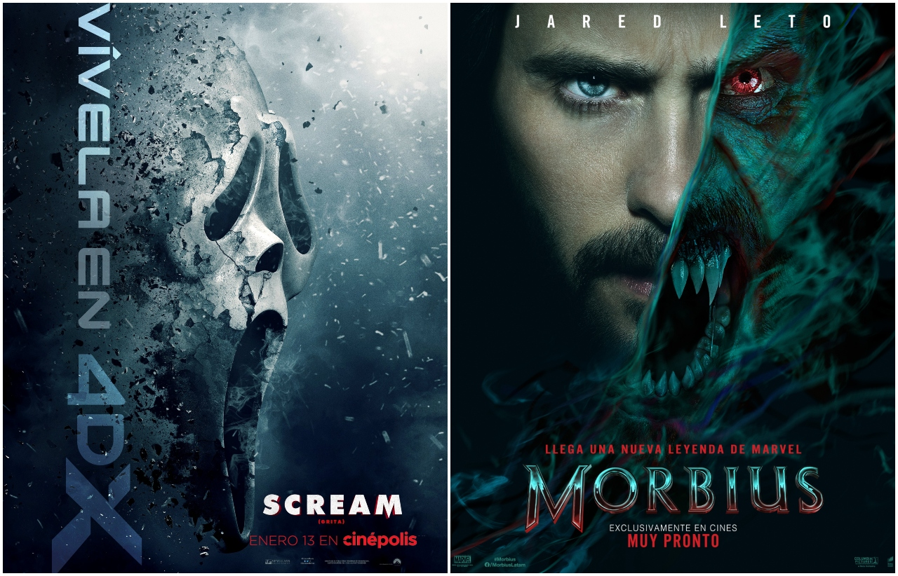

Cine
05/12/21
¿Como podemos ver si una pelicula es buena?
Para empezar si una peliculan es buena o no es subjetivo ya que al fin y al cabo es arte, dejando es claro, podemos juzgar a una pelicula en base a: el guion, La mayoria de las peliculas de dividen en dos: las comerciales, o son en hechas por arte o ganar el oscar. Analizar un filme es simplemente tener en cuenta todos los aspectos que componen el material elegido que tiene que ver con la historia, la manera en que es narrada, el guión, la calidad de los personajes, la correcta utilización de los planos, ángulos, iluminación, música y sobre todo el montaje
El Lobo de Wallstreat
Tres horas agotadoras -también muy satisfactorias- del mayor despropósito nunca visto, de desenfrenado y estrambótico sexo, de encumbrada y pura apología capitalista y de un desmadre, barbarie del uso de drogas por doquier -incluso, la primera hora y media puede llegar a ser cansina-. Extravagancia y locura extremista, libertinaje caótico y explosión imparable de locura, exceso y salvajismo del poderoso "Don Dinero"; exhibición obsesiva y continuada de una legalizada y permisiva falta de valores, de cualquier tipo de moral o ética mínima que se pueda exigir; unimaginable e impactante reflejo de una forma de vida sin control ni sentido, estallido puro de adrenalina, permanentes sobresaltos emocionales que sientes con gran repugnancia y una, nunca admitida, inexplicable atracción. Pantalla y cámara exclusivas, amén de una magnífica dirección, para un imponente Leonardo Dicaprio que luce sus mejores artes con gran inteligencia y un impresionante acierto, más un guión peculiar y excepcional por su explosivo contenido, por la demencia y excentricismo de su desarrollo y por el evidente efecto que causa en el alma del espectador; imposible visionar este film en estado neutral e inamovible pues, sin remedio ni control, altera todas tus emociones, colapsa tus pensamientos más profundos, agrede tu receptivo espíritu, ofende tu más tierna y sensible esencia, te revuelve el estómago y te coloca en inevitable pendiente de tensión y caída conforme el estallido en la evolución de la historia se va conformando. Un fabuloso trabajo, excepcional labor de equipo -dirección, interpretación, guión, acción, trama..., y todo lo que se quiera- pero cuya historia nadie te asegura te vaya a gustar; sólo es seguro que te impresionará, impactará, escandalizará y no te dejará indiferente. De modo que..., pasen y vean el mayor espectáculo del mundo, el fabuloso circo de la vida más apasionante que jamás hayan visto!!!

 Pelicula Recomendada
Pelicula Recomendada 1917
1917
 Sitios oficiales
Sitios oficiales Meme
Meme